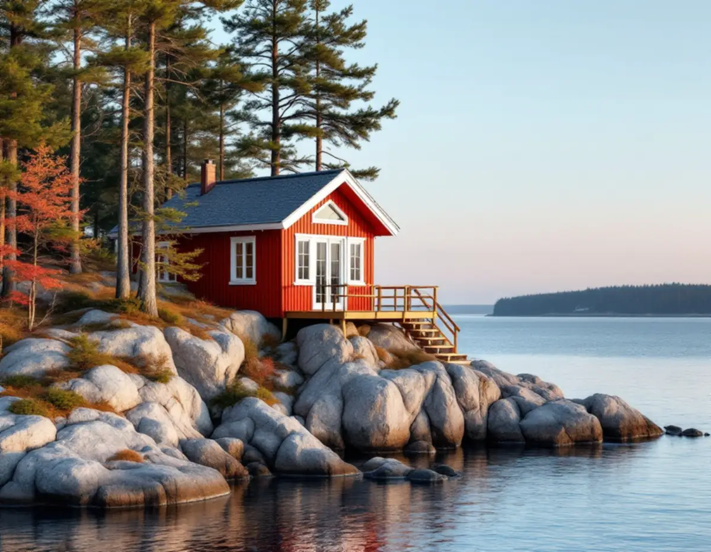
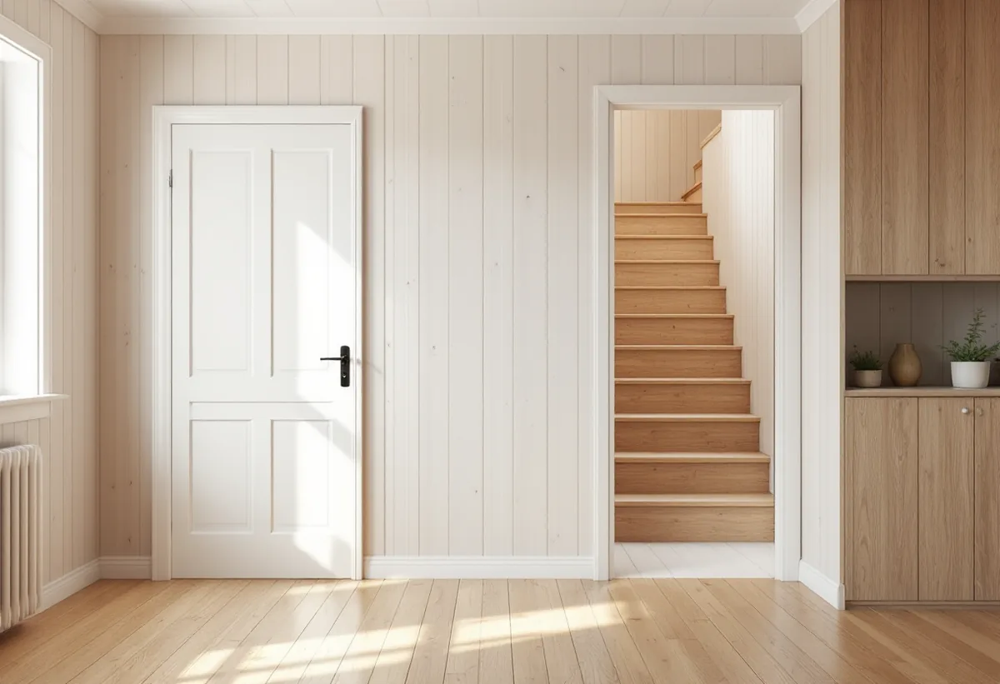

Besök i huset
Vi går igenom dörrar, fönster, trappor och väggar och ser vad sommarhuset behöver för vintern.
Allt fler bor året runt i det som byggdes som sommarhus på Värmdö. Då märks snickeriet: dörrar som drar, fönster som var tänkta för juli snarare än januari, väggar som delar upp små rum och en trappa till loftet som bara fungerade på sommaren. Geal Entreprenad AB gör snickeriarbeten på hela Värmdö, inne och ute, med gratis platsbesök och skriftligt kostnadsförslag.

Värmdö kommuns broschyr Fritidshusområde i förändring beskriver hur fler och fler väljer att bosätta sig permanent i kommunens fritidshusområden. Många av dem ska planläggas och få kommunalt vatten och avlopp, och det handlar om tusentals fastigheter. De områden som först ska anpassas kallas prioriterade förändringsområden och pekas ut i översiktsplanen Värmdö 2035.
Enligt broschyren pågår planprocessen normalt två till tre år fram till antagande, och det är först när detaljplanen har vunnit laga kraft och vatten och avlopp är utbyggt som man kan söka bygglov i området. Riktlinjerna säger att byggrätterna ses över och att det inom fastigheten ska finnas plats för parkering, ett möjligt attefallshus och bergvärme.
För den som väntar på planen finns ändå mycket att göra inne i huset, där lov sällan behövs men där ett helt år av vardag ställer andra krav än några sommarveckor.

Boverket förklarar på sidan om ingrepp i husets bärande delar att det krävs en anmälan till byggnadsnämnden och ett startbesked om ändringen påverkar de bärande delarna väsentligt. Att riva en vägg som inte är bärande, eller göra en befintlig öppning större där en balk klarar belastningen, kräver ingen anmälan. Boverket rekommenderar att ta hjälp av en konstruktör för att avgöra vilka delar som bär.
Samma sak gäller för nya fönster och dörrar. Ett fönster eller en dörr med samma bredd som den tidigare påverkar normalt inte konstruktionen väsentligt, och då behövs varken anmälan eller lov. Ska öppningen breddas så att en regel eller ett hammarband kapas är det en annan sak.
I ett gammalt sommarhus är mellanväggarna ofta lätta, men en vägg mitt i huset kan bära bjälklaget till loftet. Vi öppnar en bit av väggen och tittar innan något rivs. Byte av fönster beskrivs närmare på sidan om fönsterbyte.
Bland riktlinjerna för de prioriterade förändringsområdena står att sprängning, schakt och stora utfyllnader bör undvikas och att nya byggnader ska anpassas efter topografin. För en altan eller en entrétrappa på en bergig tomt brukar det betyda plintar eller stolpar som följer berget i stället för att marken jämnas ut.
Enligt Boverket finns det inom detaljplan ingen bygglovsplikt för en altan som är högst 1,8 meter och ligger inom 3,6 meter från huset, eller högst 1,2 meter längre ut. Utanför detaljplan finns inga sådana mått att följa, men altanen ska ändå anpassas till omgivningen och får inte bli en betydande olägenhet för grannarna.
Kommunens sida om förändringarna i plan- och bygglagen påminner om att det fortsatt inte är tillåtet att utan tillstånd bygga närmare än 4,5 meter från tomtgränsen eller inom 100 meter från strand. Har du redan byggt en friggebod, ett skärmtak eller en attefallsåtgärd räknas den in i den nya potten.
Inom kulturhistoriskt värdefulla områden och områden av riksintresse för kulturmiljövården gäller alltjämt lovplikt, och kommunen hänvisar till sin kulturmiljökarta. Ansvaret för att bygget följer lagen ligger på dig som äger fastigheten, därför går vi igenom kartan och det som redan står på tomten innan vi ritar.
Vi går igenom dörrar, fönster, trappor och väggar och ser vad sommarhuset behöver för vintern.
Vi öppnar där det behövs och avgör om en vägg bär, och om en konstruktör ska kopplas in.
Du får ett skriftligt förslag med arbete och material på separata rader.
Påverkas bärande delar väsentligt tar vi fram underlag för anmälan och väntar på startbesked.
Väggar, dörrar, foder, trappor eller altan byggs i den ordning som huset kräver.
Vi går igenom resultatet med dig och lämnar en sammanställning av vad som gjorts.
Skatteverket räknar ett fritidshus som småhus, så samma regler gäller som för en villa. Att byta och reparera dörrar, dörrlås och handtag ger avdrag, liksom att reparera eller byta fönster och att reparera entrétrappor. Ombyggnad och tillbyggnad kräver att bostaden är äldre än fem år.
Avdraget är 30 procent av arbetskostnaden, högst 50 000 kr per person och år och högst 75 000 kr tillsammans med rutavdrag. Material och resor ingår inte, enligt Skatteverket. Vi drar avdraget direkt på fakturan.
Om en vägg är bärande, hur många dörrar och fönster som berörs och i vilket skick stommen är under panelen väger tyngst. Utomhus styr berget och höjden mest hur en altan eller trappa byggs. Platsbesöket är gratis och du får ett skriftligt kostnadsförslag.
Altan, väggar, dörrar och inredning.
Snickare i Stockholm →Takbyte, takbesiktning och plåtarbeten.
Takläggare på Värmdö →Skärgård, vind och fritidshus.
Takrenovering på Värmdö →Brunnsvatten, salt och eget avlopp.
Badrumsrenovering på Värmdö →Byggrätt, PFO-områden och strandskydd.
Byggföretag på Värmdö →Sommarvillor, skyddade hus och helårsboende.
Fasadrenovering på Värmdö →Gustavsbergs bevarandevärda fönster.
Fönsterbyte på Värmdö →Fritidshus som blir permanentbostäder.
Golvläggare på Värmdö →Fritidshus, eget avlopp och Gustavsberg.
Köksrenovering på Värmdö →Plåttak och beslag på Värmdö.
Plåtslagare på Värmdö →Skärgårdshus, fritidshus och bruksmiljö på Värmdö.
Målare på Värmdö →Fritidshusplaner och lovfria 30 m².
Tillbyggnad på Värmdö →